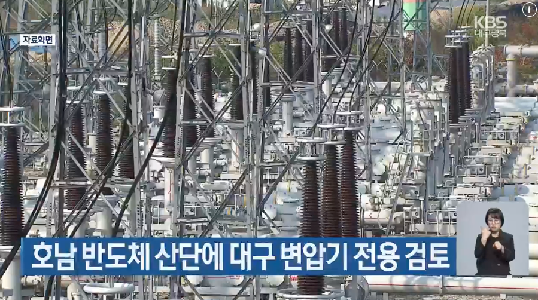

호남권 반도체 산업단지에 전력을 조기 공급하기 위해 대구 등 5개 지역 변전소에 들어갈 변압기를 돌려쓰는 방안이 검토되고 있습니다.
https://news.kbs.co.kr/news/pc/view/view.do?ncd=8696906&ref=A

호남권 반도체 산업단지에 전력을 조기 공급하기 위해 대구 등 5개 지역 변전소에 들어갈 변압기를 돌려쓰는 방안이 검토되고 있습니다.
https://news.kbs.co.kr/news/pc/view/view.do?ncd=8696906&ref=A
전라도는 진짜 동상에 흉상에 컨벤션 홀 만들어서 운영중이자너 ㅋㅋㅋ
ㄹㅇ 버스터미널부터 이름이 ㅋㅋ
우상화는 그쪽이 더...
호남 해주는대신 전력공급 도와주기로 했구나
그 지역은 나라 말아먹는데 일가견 있네
전라도에 뭐 있어?? 왜 저렇게 호남 반도체 지으려고 하는 거야?? 일자리 균등 때문인가??
소외지역이라?
소외지역 맞긴함?
소외지역은 전북이나 강원도가 진짜 소외지역이지 ㅋㅋ
표
몰표 준대라서
ㅋㅋㅋㅋ 시발
ㅋㅋㅋㅋㅋㅋㅋ
그냥 정치인들 지방공항 만들고 ktx역 만들고 이런거 연장선임
경제논리나 사업성 같은거 다 무시하고 그냥 정치인들 업적작업 느낌으로 대형사업 가져가려고 발악하고
그걸 바탕으로 다음 선거때 또 써먹음
물론 여수처럼 국책사업 하나씩 따올때마다 눈먼세금으로 잔치하는건 기본 패시브인 동네이기도함
호남은 반도체하기에 좋은 위치가 아닌데 진짜 지역이기주의 너무 심한거아니냐
지역 이기주의 없는 지역이 있음..?
멍청한 충청도는 있음
다 뺏겨 ㅇㅇ들
충청도야 오히려 스윙보터 노릇하면서 이것저것 존나 많이 받은 편 아님? 당장 수도권 근접 덕도 있겠지만 삼남지방 중에 유일한 인구 순유입 지역임
아 미안 대전
유난히 피해의식 있지 않나
경상도에 비하면 경제발전 안된건 사실이니
그렇게 따지자면 반도체 공장은 미국에 들어가야함...
나라 말아먹건말건 알빠노네
국민들이 원한건데 왜 비국민들이 난리 ㅋㅋ
좀 앵간치 해처먹어라
빵부스러기라도 좀 떨어질걸 해야지 지네끼리만 해처먹는걸 국가사업으로 ㅋㅋ
타당성이고 나발이고 사실 윗분들 입김이 강하게 들어간건 맞잖어
반도체 집어넣으면 사업타당성 계량 아무도 못이김
아니 그냥 다 알잖아 ㅋㅋㅋㅋㅋ
미친놈들 아이가
저게 맞긴함 호남 반도체건 제주 반도체건 일단 반도체가 변압기당 효용이 젤 큼
부산 여수 산단 꺼도 가져다 쓴다는데ㅋㅋㅋㅋ 말로만 지역균형발전 씨부리고 걍 다 뒤지든말든 신경안쓴다 이거지
그냥 하닉 현직자 지인들중에 찬성하는애들을 본적이없음..
경기도 아님 찬성할 사람이 어딨음?
직장이 몇 년 내로 지방으로 내려간다는데 누가 찬성하겠어요
현직 입장에서는 전라도 발령은 권고사직이나 마찬가지지 ㅋㅋㅋㅋㅋㅋ
궁금해서 찾아보니까 철회하고 신규 발주로 한다던데
너무 기한 맞추려고 무리수 두는거 아닌가 싶기도
그나마다행이네
송전탑 과연
ㅋㅋㅋㅋㅋㅋㅋㅋㅋㅋㅋㅋㅋㅋㅋㅋㅋㅋㅋㅋㅋㅋㅋㅋㅋㅋㅋㅋㅋㅋㅋㅋㅋㅋㅋㅋㅋㅋㅋ
씨부레 여기 심의위원회 꼬라지 보면 아주그냥 개씹노답임
여수랑 비슷함?
카페사장이 심사위원임ㅋㅋ
전라도에 반도체?
호 ~ 남
공공은 일처리가 빠를수없음 ㅋㅋ 얘네가 사업가도 아니고 적당히 추진하면서 뒤로 슈킹만하지
여수 못봤냐 ㅋㅋ
이젠 국민눈치 안봐도 된다요
잼버리도 여수박람회도 다 넘어가주는데 ㅋㅋ
저쪽이 해쳐먹기 좋지 ㅎㅎ 우덜식이걸랑
나가리될거같은데 그냥 시늉만 존나 하다가
나라가 분열과 갈라치기를 만들고있음
동상? 무슨 동상?